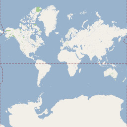

©2010 Google -
Code Home -
Terms of Service -
Privacy Policy -
Site Directory
Google Code offered in:
English -
Español -
日本語 -
한국어 -
Português -
Pусский -
中文(简体) -
中文(繁體)
Maps Javascript API V3
Maps Javascript API V2
(Deprecated API)
- Developer Guide
- API Reference
Code Samples:
More Resources:
Maps API for Flash
Maps Data API
(Deprecated API)
Static Maps API
Earth API
Local Search API
(Deprecated API)
Same great maps plus a SLA, support, and control over ads
Google Maps JavaScript API V2 Overlays
Note: The Google Maps Javascript API Version 2 has been officially deprecated as of May 19, 2010. The V2 API will continue to work as per our deprecation policy, but we encourage you to migrate your code to version 3 of the Maps Javascript API.
Map Overlays Overview
Overlays are objects on the map that are tied to latitude/longitude coordinates, so they move when you drag or zoom the map. Overlays reflect objects that you "add" to the map to designate points, lines, or areas.
The Maps API has several types of overlays:
- Points on the map are displayed using markers, and often
display a custom icon. Markers are objects of type
GMarkerand may make use of theGIcontype. - Lines on the map are displayed using polylines (representing a
collection of points). Lines are objects of type
GPolyline. - Areas on the map are displayed either as polygons if they are areas of an arbitrary shape or as ground overlays if they are rectangular. Polygons are similar to polylines in that they consist of a collection of points with a closed loop and may take any shape. Ground overlays are often used for areas that map either directly or indirectly to tiles on the map.
- The map itself is displayed using a tile overlay. You can
modify this with your own set of tiles by using a
GTileLayerOverlayor even by creating your map type using aGMapType. - The info window is also a special kind of overlay. Note, however, that
the info window is added to the map automatically, and that there can only be one
object of type
GInfoWindowattached to a map.
Each overlay implements the GOverlay interface. Overlays
can be added to a map using the GMap2.addOverlay() method and
removed using the GMap2.removeOverlay() method. (Note that
the info window is added by default to the map.)
Markers
Markers identify points on the map. By default, they use use
G_DEFAULT_ICON, though you can specify a custom icon. The
GMarker constructor takes a GLatLng and an
optional GMarkerOptions objects as arguments.
Markers are designed to be interactive. By default, they
receive "click" events, for example, and are often
used within event listeners to bring up info windows.
var map = new GMap2(document.getElementById("map_canvas"));
map.setCenter(new GLatLng(37.4419, -122.1419), 13);
// Add 10 markers to the map at random locations
var bounds = map.getBounds();
var southWest = bounds.getSouthWest();
var northEast = bounds.getNorthEast();
var lngSpan = northEast.lng() - southWest.lng();
var latSpan = northEast.lat() - southWest.lat();
for (var i = 0; i < 10; i++) {
var point = new GLatLng(southWest.lat() + latSpan * Math.random(),
southWest.lng() + lngSpan * Math.random());
map.addOverlay(new GMarker(point));
}
View example (marker-simple.html)
Draggable Markers
Markers are interactive objects that can be clicked on and dragged to a new location.
In this example, we place a draggable marker on the map, and listen to a few of its
simpler events. Draggable markers implement four kinds of events: click,
dragstart, drag and dragend to indicate their drag status.
By default, markers are clickable but not draggable, so they need to be initialized with the
additional marker option draggable set to true. Draggable markers are
also bouncy by default. If you don't like this behavior, just set the
bouncy option to false and it will drop down gracefully.
var map = new GMap2(document.getElementById("map_canvas"));
var center = new GLatLng(37.4419, -122.1419);
map.setCenter(center, 13);
var marker = new GMarker(center, {draggable: true});
GEvent.addListener(marker, "dragstart", function() {
map.closeInfoWindow();
});
GEvent.addListener(marker, "dragend", function() {
marker.openInfoWindowHtml("Just bouncing along...");
});
map.addOverlay(marker);
View example (marker-drag.html)
Icons
Markers may define an icon to show in place of the default icon.
Defining an icon is complex because of the number of different images
that make up a single icon in the Maps API. At a minimum, an icon
must define the foreground image, the size of type GSize,
and an icon offset to position the icon.
The simplest icons are based on the G_DEFAULT_ICON
type. Creating an icon based on this type allows you to quickly
change the default icon by modifying only a few properties.
In the example below, we create an icon using the
G_DEFAULT_ICON type, and then modify it to
use a different image. (Be careful using different images,
as they need to be set up as the correct size as the default image
to display properly.)
var map = new GMap2(document.getElementById("map_canvas"));
map.addControl(new GSmallMapControl());
map.setCenter(new GLatLng(37.4419, -122.1419), 13);
// Create our "tiny" marker icon
var blueIcon = new GIcon(G_DEFAULT_ICON);
blueIcon.image = "http://www.google.com/intl/en_us/mapfiles/ms/micons/blue-dot.png";
// Set up our GMarkerOptions object
markerOptions = { icon:blueIcon };
// Add 10 markers to the map at random locations
var bounds = map.getBounds();
var southWest = bounds.getSouthWest();
var northEast = bounds.getNorthEast();
var lngSpan = northEast.lng() - southWest.lng();
var latSpan = northEast.lat() - southWest.lat();
for (var i = 0; i < 10; i++) {
var point = new GLatLng(southWest.lat() + latSpan * Math.random(),
southWest.lng() + lngSpan * Math.random());
map.addOverlay(new GMarker(point, markerOptions));
}
View example (icon-simple.html)
Most icons contain a foreground image and a shadow image. The shadow image should be created at a 45 degree angle (upward and to the right) from the foreground image, and the bottom left corner of the shadow image should align with the bottom-left corner of the icon foreground image. Shadow images should be 24-bit PNG images with alpha transparency so that image boundaries appear correctly on the map.
This example creates a new type of icon, using the
Google Chart API's custom map pins. We have to specify a foreground image, the shadow image, and the points at
which we anchor the icon to the map and anchor the info window to the icon. Note that
the icon is passed in options defined in the GMarkerOptions object.
var map = new GMap2(document.getElementById("map"));
map.addControl(new GSmallMapControl());
map.addControl(new GMapTypeControl());
map.setCenter(new GLatLng(37.4419, -122.1419), 13);
// Create our "cafe" marker icon
var cafeIcon = new GIcon();
cafeIcon.image = "http://chart.apis.google.com/chart?chst=d_map_pin_icon&chld=cafe|996600";
cafeIcon.shadow = "http://chart.apis.google.com/chart?chst=d_map_pin_shadow";
cafeIcon.iconSize = new GSize(12, 20);
cafeIcon.shadowSize = new GSize(22, 20);
cafeIcon.iconAnchor = new GPoint(6, 20);
cafeIcon.infoWindowAnchor = new GPoint(5, 1);
// Set up our GMarkerOptions object literal
markerOptions = { icon:cafeIcon };
// Add 10 markers to the map at random locations
var bounds = map.getBounds();
var southWest = bounds.getSouthWest();
var northEast = bounds.getNorthEast();
var lngSpan = northEast.lng() - southWest.lng();
var latSpan = northEast.lat() - southWest.lat();
for (var i = 0; i < 10; i++) {
var point = new GLatLng(southWest.lat() + latSpan * Math.random(),
southWest.lng() + lngSpan * Math.random());
map.addOverlay(new GMarker(point, markerOptions));
}
Note that the definition of the GMarkerOptions objects demonstrates usage of object literal
notation. The object is not instantiated using a constructor; instead, it is simply
declared using name-value pairs.
View example (icon-complex.html)
For more information about using the Chart API HTTP Service,
check out this
Group posting. To create more complex icons, you may also be interested
in the
MapIconMaker and its associated
MarkerIconOptions Wizard.
Custom Icons
GIcon objects also have several other properties
that you should set to get maximum browser compatibility and
functionality from your icons. For example, the imageMap
property specifies the shape of the non-transparent parts of the
icon image. If you do not set this property in your icon, the entire
icon image (including the transparency) will be clickable in
Firefox/Mozilla. See the GIcon class
reference for more information.
In many cases, your icons may have different foregrounds, but the same shape
and shadow. The easiest way to achieve this behavior is to use the copy constructor
for the GIcon class, which copies all the properties over to a new icon
which you can then customize.
var map = new GMap2(document.getElementById("map_canvas"));
map.addControl(new GSmallMapControl());
map.addControl(new GMapTypeControl());
map.setCenter(new GLatLng(37.4419, -122.1419), 13);
// Create a base icon for all of our markers that specifies the
// shadow, icon dimensions, etc.
var baseIcon = new GIcon(G_DEFAULT_ICON);
baseIcon.shadow = "http://www.google.com/mapfiles/shadow50.png";
baseIcon.iconSize = new GSize(20, 34);
baseIcon.shadowSize = new GSize(37, 34);
baseIcon.iconAnchor = new GPoint(9, 34);
baseIcon.infoWindowAnchor = new GPoint(9, 2);
// Creates a marker whose info window displays the letter corresponding
// to the given index.
function createMarker(point, index) {
// Create a lettered icon for this point using our icon class
var letter = String.fromCharCode("A".charCodeAt(0) + index);
var letteredIcon = new GIcon(baseIcon);
letteredIcon.image = "http://www.google.com/mapfiles/marker" + letter + ".png";
// Set up our GMarkerOptions object
markerOptions = { icon:letteredIcon };
var marker = new GMarker(point, markerOptions);
GEvent.addListener(marker, "click", function() {
marker.openInfoWindowHtml("Marker <b>" + letter + "</b>");
});
return marker;
}
// Add 10 markers to the map at random locations
var bounds = map.getBounds();
var southWest = bounds.getSouthWest();
var northEast = bounds.getNorthEast();
var lngSpan = northEast.lng() - southWest.lng();
var latSpan = northEast.lat() - southWest.lat();
for (var i = 0; i < 10; i++) {
var point = new GLatLng(southWest.lat() + latSpan * Math.random(),
southWest.lng() + lngSpan * Math.random());
map.addOverlay(createMarker(point, i));
}
View example (icon-custom.html)
Using the Marker Manager
Adding a large number of markers to a Google map may both slow down rendering of the map and introduce too much visual clutter, especially at certain zoom levels. The marker manager utility provides a solution to both of these issues, allowing efficient display of hundreds of markers on the same map and the ability to specify at which zoom levels markers should appear.
The marker manager utility is provided within the
GMaps Utility Library.
This library is open source, and contains utilities that are not part of the core Google
Maps API. To add utilities contained within this library, you add the JavaScript source
directly with a <script> tag.
<script src="http://gmaps-utility-library.googlecode.com/svn/trunk/markermanager/release/src/markermanager.js">
The MarkerManager object within the markermanager.js library
offloads management of markers registered with the utility, keeping
track of which markers are visible at certain zoom levels within the current view, and
passing only these markers to the map for drawing purposes. The manager monitors the map's
current viewport and zoom level, dynamically adding or removing markers from the map as
they become active. In addition, by allowing markers to specify the zoom levels at which
they display themselves, developers can implement marker clustering. Such management can
greatly speed up map rendering and reduce visual clutter.
To use a marker manager, create a MarkerManager object. In the
simplest case, just pass a map to it.
var map = new GMap2(document.getElementById("map_canvas"));
map.setCenter(new GLatLng(41, -98), 4);
var mgr = new MarkerManager(map);
You may also specify a number of options to fine-tune the marker
manager's performance. These options are passed via a
MarkerManagerOptions
object, which contains the following fields:
maxZoom: specifies the maximum zoom level monitored by this marker manager. The default value is the highest zoom level supported by Google maps.borderPadding: specifies the extra padding, in pixels, monitored by the manager outside the current viewport. This allows for markers just out of sight to be displayed on the map, improving panning over small ranges. The default value is 100.trackMarkers: specifies whether movement of movements of markers should be tracked by the marker manager. If you wish to have managed markers that change their positions through thesetPoint()method, set this value totrue. By default, this flag is set tofalse. Note that if you move markers with this value set tofalse, they will appear in both the original location and the new location(s).
The MarkerManagerOptions object is an object literal, so you
simply declare the object without a constructor:
var map = new GMap2(document.getElementById("map_canvas"));
var mgrOptions = { borderPadding: 50, maxZoom: 15, trackMarkers: true };
var mgr = new MarkerManager(map, mgrOptions);
Once you create a manager, you will want to add markers to it.
MarkerManager supports adding single markers one at a
time using the addMarker() method or a collection passed
as an array using the addMarkers() method. Single markers
added using addMarker() will appear immediately on the map
provided that they fall within the current view and specified zoom
level constraints.
Adding markers collectively using addMarkers() is
recommended as it is more efficient. Markers added using the
addMarkers() method will not appear on the map until
you explicitly call the MarkerManager's
refresh() method, which adds all markers within the
current viewport and border padding region to the map. After this
initial display, MarkerManager takes care of all
visual updates by monitoring the map's "moveend" events.
Zoom Level Example: Weather Map
The following example creates a mock weather map for Europe. At zoom level 3, 20 randomly distributed weather icons are displayed. At level 6, when all 200 cities with population over 300,000 are easily distinguished, an additional 200 markers are shown. Finally, at level 8, 1000 markers are shown. (Note: to simplify the example, markers will be added at random locations.)
function setupMap() {
if (GBrowserIsCompatible()) {
map = new GMap2(document.getElementById("map_canvas"));
map.addControl(new GLargeMapControl());
map.setCenter(new GLatLng(41, -98), 4);
window.setTimeout(setupWeatherMarkers, 0);
}
}
function getWeatherMarkers(n) {
var batch = [];
for (var i = 0; i < n; ++i) {
batch.push(new GMarker(getRandomPoint(), { icon: getWeatherIcon() }));
}
return batch;
}
function setupWeatherMarkers() {
mgr = new MarkerManager(map);
mgr.addMarkers(getWeatherMarkers(20), 3);
mgr.addMarkers(getWeatherMarkers(200), 6);
mgr.addMarkers(getWeatherMarkers(1000), 8);
mgr.refresh();
}
View example (weather_map.html)
Clustering Example: Google Offices
The marker manager can also perform simple clustering of markers. While it does not do so automatically, you can achieve the desired effect by setting both the minimum and maximum zoom at which a given marker is shown. In this example we create a map of Google offices in North America. At the highest level we show flags of countries in which offices are located. For zoom levels 3 to 7 we show icons over population centers where one or more offices are located. Finally, at levels 8 or higher, we show individual markers for each office.
var officeLayer = [
{
"zoom": [0, 3],
"places": [
{ "name": "US Offices", "icon": ["us", "flag-shadow"], "posn": [40, -97] },
{ "name": "Canadian Offices", "icon": ["ca", "flag-shadow"], "posn": [58, -101] }
]
},
...
};
function setupOfficeMarkers() {
var mgr = new MarkerManager(map);
for (var i in officeLayer) {
var layer = officeLayer[i];
var markers = [];
for (var j in layer["places"]) {
var place = layer["places"][j];
var icon = getIcon(place["icon"]);
var posn = new GLatLng(place["posn"][0], place["posn"][1]);
markers.push(new GMarker(posn, { title: place["name"], icon: icon }));
}
mgr.addMarkers(markers, layer["zoom"][0], layer["zoom"][1]);
}
mgr.refresh();
}
View example (google_northamerica_offices.html)
For more information, see the reference documentation for the Open Source Marker Manager.
Polylines
GPolyline objects create a linear overlay on the map. A
GPolyline consists of a series of points and creates a series
of line segments that connect those points in an ordered sequence.
Drawing Polylines
Polylines are drawn as a series of straight segments on the map. You can specify
custom colors, weights, and opacities for the line. Colors should be in hexadecimal
numeric HTML style, e.g., use #ff0000 instead of red.
GPolyline does not understand named colors.
GPolyline objects use the vector drawing capabilities
of the browser, if available. In Internet Explorer, Google Maps uses
VML (see XHTML and VML) to draw polylines;
in other browsers SVG is used if available. In all other circumstances, we request an
image of the line from Google servers and overlay that image on the
map, refreshing the image as necessary as the map is zoomed and dragged around.
The following code snippet creates a 10-pixel-wide red polyline between two points:
var polyline = new GPolyline([ new GLatLng(37.4419, -122.1419), new GLatLng(37.4519, -122.1519) ], "#ff0000", 10); map.addOverlay(polyline);
View example (polyline-simple.html)
Geodesic Polylines
Polylines represented on the map are straight lines conforming to the
current projection. That is, they appear straight on the map, but may in fact
not properly account for the curvature of the earth. If you instead wish
to draw a geodesic (a segment of a "great circle" representing the shortest
distance between two points on the surface of the earth), you
will need to pass geodesic:true in the GPolylineOptions
argument of the GPolyline.
The GPolylineOptions object is an example of an object literal.
With object literals, you don't construct an object. Instead, you pass
the arguments as a series of name/value pairs within curly brackets.
Object literals are used often in those cases where instantiating an
object is unnecessary.
var map = new GMap2(document.getElementById("map_canvas"));
map.setCenter(new GLatLng(45.828799,-105.292969), 2);
// Create GPolylineOptions argument as an object literal.
// Note that we don't use a constructor.
var polyOptions = {geodesic:true};
var polyline = new GPolyline([
new GLatLng(40.65642, -73.7883),
new GLatLng(61.1699849, -149.944496)
], "#ff0000", 10, 1, polyOptions);
map.addOverlay(polyline);
View example (polyline-geodesic.html)
Encoded Polylines
The GPolyline object within a Google map denotes a line as a
series of points, making it easy to use but not necessarily compact. Long and
complicated lines require a fair amount of memory, and often may take longer to
draw. Also, the individual segments within an unencoded polyline are drawn on the
map regardless of their resolution at larger zoom levels.
The Google Maps API allows you to represent paths using encoded polylines,
which specify a series of points within a GPolyline using a
compressed format of ASCII characters. The encoded polyline also allows you
to specify groups of zoom levels that should be ignored when drawing line
segments; doing so allows you to specify how detailed a polyline should be
at a given zoom level. Although more difficult to set up, encoded polylines
can make your overlays draw much more efficiently.
For example, a GPolyline of 3 points (2 line segments) is normally represented as:
var polyline = new GPolyline([
new GLatLng(37.4419, -122.1419),
new GLatLng(37.4519, -122.1519),
new GLatLng( 37.4619, -122.1819)
], "#FF0000", 10);
map.addOverlay(polyline);
An encoded GPolyline of these same points appears below
(for now, don't worry about particulars of the encoding algorithm).
var encodedPolyline = new GPolyline.fromEncoded({
color: "#FF0000",
weight: 10,
points: "yzocFzynhVq}@n}@o}@nzD",
levels: "BBB",
zoomFactor: 32,
numLevels: 4
});
map.addOverlay(encodedPolyline);
There are two things to notice about this code.
-
First, the series of points is represented as a series of ASCII characters in
the encoded polyline, while familiar latitude and longitudes are used in the
basic
GPolyline. The algorithm for creating these points as a series of encoded ASCII values is documented here. This algorithm is needed if you wish to calculate encoded polylines on the fly via a server process, for example. However, if you just wish to convert existing points given latitudes and longitudes, you can use our interactive utility. -
Second, the encoded polyline also allows you to specify the maximum zoom level for each line segment
to draw itself on a Google map. If a point is not shown on a higher zoom level, the path is simply drawn
from the previous displayable point to the next displayable point. Note that this feature is not available
within non-encoded
GPolylines and is especially useful for allowing fast drawing at high zoom levels, where the details of some line segments may not be relevant. For example, an encoded polyline representing a drive from New York City to Chicago should not care about the line segments representing particular streets in Manhattan when the map is zoomed out to the state level.
View example (polyline-encoding.html)
Interactive Encoded Polyline Utility
See Polyline algorithm for information on the underlying encoded polyline algorithm.
Polygons
GPolygon objects are similar to GPolyline objects
in that they consist of a series of points in an ordered sequence. However,
instead of being open-ended, polygons are designed to define regions within a
closed loop. As with polylines, you can define custom colors, weights, and
opacities for the edge of the polygon (the "line") and custom colors and
opacities for the fill area within the enclosed region. Colors should be
in hexadecimal numeric HTML style.
GPolygon objects, like GPolyline objects, use
the vector drawing capabilities of the browser, if available.
The following code snippet creates a 10-pixel-wide box around four points. Note that this polygon is "closed" by returning the segment path to its initial point; you should always close polygons to avoid undefined behavior.
var map = new GMap2(document.getElementById("map_canvas"));
map.setCenter(new GLatLng(37.4419, -122.1419), 13);
map.addControl(new GSmallMapControl());
GEvent.addListener(map, 'click', function(overlay, latlng) {
var lat = latlng.lat();
var lon = latlng.lng();
var latOffset = 0.01;
var lonOffset = 0.01;
var polygon = new GPolygon([
new GLatLng(lat, lon - lonOffset),
new GLatLng(lat + latOffset, lon),
new GLatLng(lat, lon + lonOffset),
new GLatLng(lat - latOffset, lon),
new GLatLng(lat, lon - lonOffset)
], "#f33f00", 5, 1, "#ff0000", 0.2);
map.addOverlay(polygon);
});
View example (polygon-simple.html)
Ground Overlays
Polygons are useful overlays to represent arbitrarily-sized areas, but they
cannot display images. If you have an image that you wish to place on a map,
you can use a GGroundOverlay object. The constructor for a
GGroundOverlay a URL of an image and the GLatLngBounds of the image
as parameters.
The following example places an antique map of Newark, NJ on the map as an overlay:
var map = new GMap2(document.getElementById("map_canvas"));
map.setCenter(new GLatLng(40.740, -74.18), 12);
// ground overlay
var boundaries = new GLatLngBounds(new GLatLng(40.716216,-74.213393), new GLatLng(40.765641,-74.139235));
var oldmap = new GGroundOverlay("http://www.lib.utexas.edu/maps/historical/newark_nj_1922.jpg", boundaries);
map.addControl(new GSmallMapControl());
map.addControl(new GMapTypeControl());
map.addOverlay(oldmap);
View example (groundoverlay-simple.html)
Tile Overlays
The map within the Google Maps API consist of a set of tiles,
covering the entire surface of the earth, at each zoom level. Tiles
exist for each map type in use: G_NORMAL_MAP,
G_SATELLITE_MAP, G_HYBRID_MAP, and
G_PHYSICAL_MAP.
MapType Tile Coverage
Tiles do not cover all regions at all zoom levels. Different areas of the map may contain tiles at varying resolutions, and therefore varying zoom levels. As a result, tile coverage of any map type varies based on location. Many areas of the Pacific Ocean do not appear at high zoom levels, for example, while Manhattan may have very detailed satellite images.
At the lowest zoom level (level 0), one tile represents the entire earth:

Each succeeding zoom level divides the map into 4 N tiles, where N refers to the zoom level. For example, at zoom level 1, Google Maps divides the world up into a 2x2 grid for a total of 4 tiles; at zoom level 2, Google Maps divides up the world into a 4x4 grid for a total of 16 tiles, etc.
For satellite map types (map types of G_SATELLITE_MAP and
G_HYBRID_MAP), you can determine the maximum zoom level where
satellite images are available at a particular location using the
GMapType.getMaxZoomAtLatLng() method.
The following example captures user clicks, and determines the highest zoom level for satellite imagery at that location. Note that you don't need to be viewing a satellite map to determine the maximum zoom level.
var map;
function initialize() {
if (GBrowserIsCompatible()) {
map = new GMap2(document.getElementById("map_canvas"));
map.setCenter(new GLatLng(55.366625,-131.660156), 7);
map.setMapType(G_SATELLITE_MAP);
map.setUIToDefault();
GEvent.addListener(map, 'click', function(overlay, latlng) {
showMaxZoom(latlng);
});
}
}
function showMaxZoom(latlng) {
G_SATELLITE_MAP.getMaxZoomAtLatLng(latlng, function(response) {
if (response && response['status'] == G_GEO_SUCCESS) {
alert("The maximum zoom level where satellite imagery is available at this location is: " + response['zoom']);
}
});
}
View example (map-maxzoom.html)
Custom Map Tiles
If you wish to modify display of map tiles, you have two options:
- Implement your own tile overlay on existing map types
using
GTileLayerOverlay - Implement your own custom map type using
GMapType
The first case is much simpler but is more limited in usage, while the second case allows you more control over display within your application. Each case is discussed below, although full implementation of a custom map type is not covered in this documentation.
Each case requires you to implement three abstract methods from the
GTileOverlay interface:
getTileUrl()returns to the map a URL containing the tile image, given a passedGPointand zoom level.isPng()returns to the map aBooleanindicating whether the image is a PNG file (which can be displayed transparently). Iftrue, the image is assumed to be a PNG.getOpacity()returns a value between 0.0 and 1.0 indicating the level of opacity to display this image.
We will discuss the different approaches in the next two sections.
Tile Layer Overlays
If you want an overlay to appear on an existing map type, use the
GTileLayerOverlay object. This object requires you to
create a GCopyrightCollection and attach it to the
tile layer to indicate permission for use of the image or images.
The following code displays a simple transparent overlay on each tile at all zoom levels, denoting the outline of the tiles between floating crosshairs.
// Set up the copyright information
// Each image used should indicate its copyright permissions
var myCopyright = new GCopyrightCollection("© ");
myCopyright.addCopyright(new GCopyright('Demo',
new GLatLngBounds(new GLatLng(-90,-180), new GLatLng(90,180)),
0,'©2007 Google'));
// Create the tile layer overlay and
// implement the three abstract methods
var tilelayer = new GTileLayer(myCopyright);
tilelayer.getTileUrl = function() { return "../include/tile_crosshairs.png"; };
tilelayer.isPng = function() { return true;};
tilelayer.getOpacity = function() { return 1.0; }
var myTileLayer = new GTileLayerOverlay(tilelayer);
var map = new GMap2(document.getElementById("map_canvas"));
map.setCenter(new GLatLng(37.4419, -122.1419), 13);
map.addOverlay(myTileLayer);
View example (tileoverlay-simple.html)
Custom Map Types
Note: This is an Advanced Topic
If you find the GTileLayerOverlay too limiting,
you can define your own custom map type, and develop an entirely new
display paradigm. To do so, construct a GMapType object
and add it to the map using the GMap2.addMapType() method.
Constructing a map type from scratch is an involved process. You will need to build a way to define and retrieve dynamic data to display on the map given current coordinates, and you will need to determine yourself how to reference and display tile images. How you do that is up to you; however, we can help you a little by explaining how Google Maps implements its tile references.
Google Maps Coordinates
There are three coordinate systems that the Google Maps API uses:
- Pixel coordinates referencing a point on an image tile
- Tile coordinates referencing a tile within a tile layer
- The zoom layer, which defines the total number of tiles
Each system is discussed below.
Pixel Coordinates
Each tile within Google Maps consists of 256 x 256 pixels. A point on a
particular tile can therefore be referenced using a GPoint x,y
pair. The origin (0,0) for each tile is denoted at the
northwest corner of the tile. Therefore, for the single tile which represents
the entire earth, the origin is set to lie at the North Pole and -180 degrees
longitude, where you see Alaska. x (longitude) values increase
east, while y (latitude) values increase south to the
the southeast point (255,255).
At higher zoom levels, the pixel space expands by doubling in both the x and y directions. For example, at zoom level 1, the map consists of 4 256x256 pixels tiles, resulting in a pixel space from 512x512. At zoom level 19, each x and y pixel on the map can be referenced using a value between 0 and 256 * 219.
Tile Coordinates
Referencing such a point uniquely on the entire map is often not practical. At higher zoom levels, the Google Maps API could not use one image file to display the entire earth. It is therefore useful to determine which image tile is in use, and then compute the pixel coordinate relative to the origin of that tile. Any custom map you implement will need to do the same evaluation.
Tiles in Google Maps are numbered from the same origin as that for
pixels, so that the origin tile is always at the northwest corner
of the map. Tiles are indexed using x,y coordinates
from that origin. For example, at zoom level 2, when the earth
is divided up into 16 tiles, each tile can be referenced by a
unique x,y pair:

Indexing a particular point on a particular zoom level can therefore use two
GPoint values: one to reference the tile in usage, and one to
reference the coordinate within the tile's pixel on that 256 x 256 image.
Implementing a tile overlay for other than a few simple zoom levels can
be an onerous task, as you would need to add logic to determine which
particular tile image to serve. The Google Maps API allows you to construct
a GTileLayer passing a GTileLayerOptions argument
as an object literal. The GTileLayerOptions argument contains
a tileUrlTemplate property that maps tile requests to URLs
based on tile coordinates. The constructor for an overlay would look something
like this:
var tileLayerOverlay = new GTileLayerOverlay(
new GTileLayer(null, null, null, {
tileUrlTemplate: 'http://domain.com/myimage_{Z}_{X}_{Y}.png',
isPng:true,
opacity:1.0
})
);
map.addOverlay(tlo);
This template scheme allows you to address a collection of tile images named using tile coordinates as they are done within Google Maps.
Handling Copyright Information
Maps usually have imagery which is either purchased, generated or licensed from some external entity. Those images often require copyright information to be displayed, and in certain cases (such as satellite data), the imagery may come from different sources at different locations on the map. In order to provide the ability to display dynamic copyright information on your custom map types, the Maps API provides a number of objects to hold copyright information, and provides methods and interfaces for implementing retrieval of this copyright information based on the current viewport and zoom level.
Copyright Objects
The GCopyright object is a simple object that holds basic copyright
information. This object's minZoom and bounds
properties define the constraints under which this copyright information is valid
with text containing the copyright string to display under those
conditions.
Sets of GCopyright objects are collected into a
GCopyrightCollection. The GCopyrightCollection constructor
allows you to define a text prefix (such as "Imagery © 2007") to attach to all
copyright notices. Note that you cannot add copyrights to the GCopyrightCollection
directly within the constructor. You must call the addCopyright
method to add individual GCopyright objects to the collection after it is
constructed.
The GTileLayer interface requires a copyrights argument
in its constructor. Classes which handle these tile layers
(such as GTileLayerOverlay and GMapType) need to create a
GCopyrightCollection object beforehand and pass that object to the
constructor of the tile layer.
The Google Maps API implements the following methods for displaying copyright information, which you may override to provide custom behavior:
GMapType.getCopyrights()invokesGTileLayer.getCopyright()on all its child tile layers.- Each
GTileLayer.getCopyright()invokesGCopyrightCollection.getCopyrightNotice()on its copyright collection. GCopyrightCollection.getCopyrightNotice()returns the copyright notice(s) attached to this object, checking whether the givenboundsandzoomapplies to each of its childGCopyrightobjects.
Each of these methods contains bounds and zoom parameters
which you can override and inspect to decide what copyright information to display.
By default, whenever the Google Maps API displays a tile layer within a map type,
it retrieves the current copyrights in use via the GTileLayer.getCopyright()
method. Some map types may include multiple tile layers, which may mean that information from
multiple GCopyrightCollection objects may need to be displayed concurrently.
(The G_HYBRID_MAP map type implements both a satellite layer and a map layer,
for example.) This concurrent information is displayed by concatenating copyright notices
from multiple copyright collections.
Converting Projection Coordinates
The earth is a sphere, while a map is a flat two-dimensional object. The map
that you see within the Google Maps API is a projection of that sphere onto
a flat surface. Projections in the Google Maps API are implemented using the
GProjection interface. Only one projection is currently
implemented in the Google Maps API: GMercatorProjection. In
its simplest terms, a projection can be defined as a one-to-one
correspondence of GLatLng values into coordinates on the map
and the GProjection interface provides conversion utilities
for this purpose.
The GProjection.fromLatLngToPixel() method converts a
GLatLng value into a pixel coordinate at the given zoom level.
Similarly, the GProjection.fromPixelToLatLng() method converts
a pixel coordinate at a given zoom level into a GLatLng value.
These methods are useful when implementing a map type, as they allow you
to determine which tiles to show, how to display them, and at what offset
to display them.
The following example handles click events by calculating the pixel coordinates at the current zoom level, and returns both the pixel coordinates and tile coordinates for that location:
View example (tile-detector.html)
For more information about implementing map types, consult the GMapType reference.
Layers
GLayer objects are overlay objects that store a set of
third-party geographic information. Layers are sets of
geographically-related features that share some common function, and are
displayed on a map as a group. Google provides these sets from
data obtained from other sources, and bundles them together within a
a single layer.
Layers generally consist of a variety of items — typically markers,
polylines, and polygons — though they are not considered separate objects.
The layer itself (and all of its components) is considered a single overlay
to the Maps API, and is added to the map via the standard
addOverlay() method. The layer may also be interactive,
allowing actions on components to bring up info windows, for example.
Layers each contain a unique namespace ID so that they can be easily
referenced and addressed uniquely. This namespace ID is currently based on the
domain of the source layer. The English Geotagged Wikipedia ©
Articles layer, for example, has a namespace ID of
"org.wikipedia.en".
The Google Maps API currently has access to these public layers. New layers will periodically be added to the Maps API. We will maintain this list at this spreadsheet.
The following code snippet adds an English Wikipedia layer to Greenwich Village, New York City:
function initialize() {
if (GBrowserIsCompatible()) {
var map = new GMap2(document.getElementById("map_canvas"));
map.setCenter(new GLatLng(40.730885,-73.997383), 15);
var myLayer = new GLayer("org.wikipedia.en");
map.addOverlay(myLayer);
}
}
View example (layer-simple.html)
Custom Overlays
The Google Maps API also allows you to create custom
overlay objects by implementing the GOverlay interface. The Google Maps
API provides several services, such as GTrafficOverlay,GGeoXml,
and GStreetviewPanorama objects, through implementation of the
GOverlay interface. (These services
are documented in the Services section.)
The GOverlay interface requires you to implement four abstract methods:
initialize()called in response toGMap2.addOverlay()remove()called in response toGMap2.removeOverlay()copy()to allow templating of the new overlayredraw()called in response to a display change within the map
Google Maps API interfaces are implemented within JavaScript through assignment of the
prototype property to an instance of the inherited object.
For example, a Rectangle object inherits from the
GOverlay interface using the following code:
OverlaySubclass.prototype = new GOverlay();
Implementation of the abstract methods in the GOverlay interface
is facilitated through assignment of these methods on the object's
prototype:
OverlaySubclass.prototype.initialize = myInitializeMethod; OverlaySubclass.prototype.remove = myRemoveMethod; OverlaySubclass.prototype.copy = myCopyMethod; OverlaySubclass.prototype.redraw = myRedrawMethod;
In the following example, we create a Rectangle overlay that outlines
a geographic region on the map. The Rectangle class defines the
four required methods of the GOverlay interface. Specifically,
make note of the initialize() method, which creates the DOM elements
representing our overlay, and the redraw() method, which positions
and sizes the overlay on the map based on the current projection and zoom level.
Every DOM element that makes up an overlay exists on a map pane
that defines the z-order at which it will be drawn. For example, polylines
are flat against the map, so they are drawn in the lowest G_MAP_MAP_PANE.
Markers place their shadow elements in the G_MAP_MARKER_SHADOW_PANE
and their foreground elements in the G_MAP_MARKER_PANE.
Placing your overlay elements in the correct panes ensures that polylines are
drawn below marker shadows and the info window is drawn above other overlays
on the map. In this example, our overlay is flat against the map, so we
add it to the lowest z-order pane G_MAP_MAP_PANE, just like
GPolyline. See the class reference
for a complete list of map panes.
// A Rectangle is a simple overlay that outlines a lat/lng bounds on the
// map. It has a border of the given weight and color and can optionally
// have a semi-transparent background color.
function Rectangle(bounds, opt_weight, opt_color) {
this.bounds_ = bounds;
this.weight_ = opt_weight || 2;
this.color_ = opt_color || "#888888";
}
Rectangle.prototype = new GOverlay();
// Creates the DIV representing this rectangle.
Rectangle.prototype.initialize = function(map) {
// Create the DIV representing our rectangle
var div = document.createElement("div");
div.style.border = this.weight_ + "px solid " + this.color_;
div.style.position = "absolute";
// Our rectangle is flat against the map, so we add our selves to the
// MAP_PANE pane, which is at the same z-index as the map itself (i.e.,
// below the marker shadows)
map.getPane(G_MAP_MAP_PANE).appendChild(div);
this.map_ = map;
this.div_ = div;
}
// Remove the main DIV from the map pane
Rectangle.prototype.remove = function() {
this.div_.parentNode.removeChild(this.div_);
}
// Copy our data to a new Rectangle
Rectangle.prototype.copy = function() {
return new Rectangle(this.bounds_, this.weight_, this.color_,
this.backgroundColor_, this.opacity_);
}
// Redraw the rectangle based on the current projection and zoom level
Rectangle.prototype.redraw = function(force) {
// We only need to redraw if the coordinate system has changed
if (!force) return;
// Calculate the DIV coordinates of two opposite corners of our bounds to
// get the size and position of our rectangle
var c1 = this.map_.fromLatLngToDivPixel(this.bounds_.getSouthWest());
var c2 = this.map_.fromLatLngToDivPixel(this.bounds_.getNorthEast());
// Now position our DIV based on the DIV coordinates of our bounds
this.div_.style.width = Math.abs(c2.x - c1.x) + "px";
this.div_.style.height = Math.abs(c2.y - c1.y) + "px";
this.div_.style.left = (Math.min(c2.x, c1.x) - this.weight_) + "px";
this.div_.style.top = (Math.min(c2.y, c1.y) - this.weight_) + "px";
}
var map = new GMap2(document.getElementById("map"));
map.addControl(new GSmallMapControl());
map.addControl(new GMapTypeControl());
map.setCenter(new GLatLng(37.4419, -122.1419), 13);
// Display a rectangle in the center of the map at about a quarter of
// the size of the main map
var bounds = map.getBounds();
var southWest = bounds.getSouthWest();
var northEast = bounds.getNorthEast();
var lngDelta = (northEast.lng() - southWest.lng()) / 4;
var latDelta = (northEast.lat() - southWest.lat()) / 4;
var rectBounds = new GLatLngBounds(
new GLatLng(southWest.lat() + latDelta, southWest.lng() + lngDelta),
new GLatLng(northEast.lat() - latDelta, northEast.lng() - lngDelta));
map.addOverlay(new Rectangle(rectBounds));